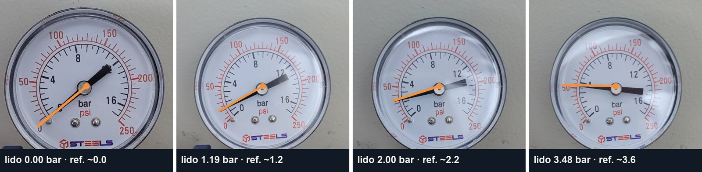
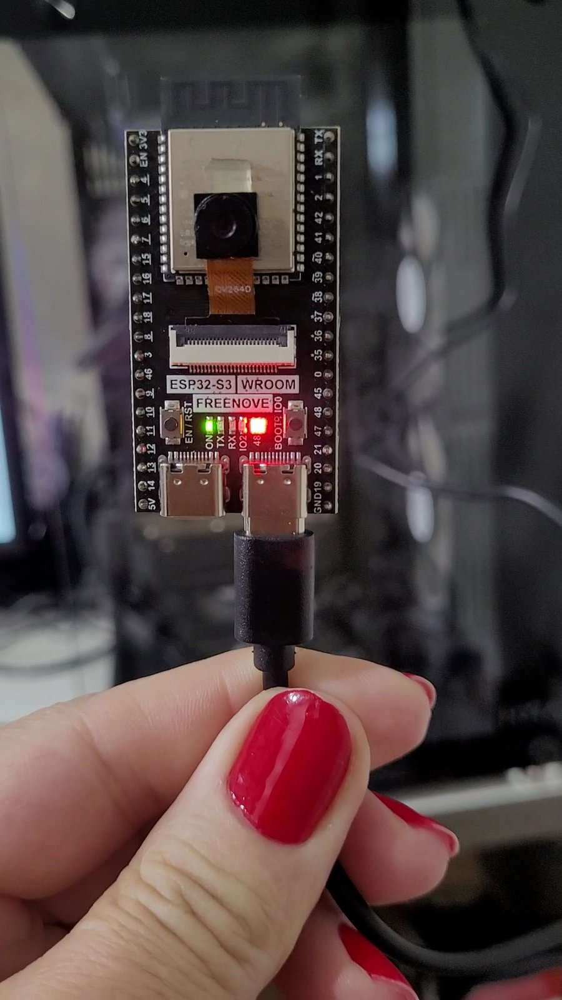
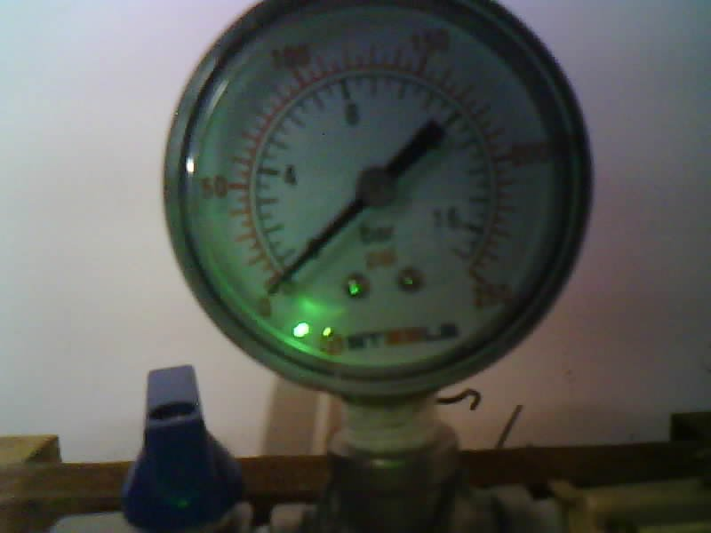
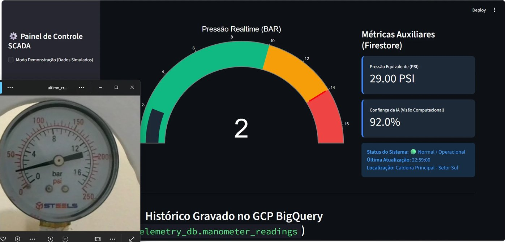

Industrial Gauge Monitor
Turns the analog pressure gauges already installed in factories into connected sensors. A low-cost camera, AI running inside the plant, and the pressure in bar and psi in your SCADA. No instrument replacement, no process downtime.
Transforma os manômetros analógicos que já estão instalados na fábrica em sensores conectados. Uma câmera de baixo custo, IA rodando dentro da planta e a pressão em bar e psi no seu SCADA. Sem trocar o instrumento e sem parar o processo.
The problemO problema
Most industrial plants still rely on analog gauges that someone has to walk to and read. Readings are infrequent, written by hand and hard to audit, and a slow drift can go unnoticed until it becomes a stop. Replacing every gauge with a digital transmitter means buying instruments, running cables and stopping the process.
A maior parte das plantas industriais ainda depende de manômetros analógicos que alguém precisa ir até o local para ler. As leituras são esparsas, anotadas à mão e difíceis de auditar, e uma variação lenta pode passar despercebida até virar uma parada. Trocar cada manômetro por um transmissor digital exige comprar instrumentos, passar cabos e parar o processo.
How it worksComo funciona
The camera is mounted in front of the existing gauge. Nothing touches the process line, and images can stay inside the plant.
A câmera é fixada em frente ao manômetro existente. Nada toca a linha de processo, e as imagens podem ficar dentro da planta.
CaptureCapturar
A Wi-Fi camera (ESP32-S3 + OV2640) photographs the gauge at a set interval and posts the image to the plant gateway.
Uma câmera Wi-Fi (ESP32-S3 + OV2640) fotografa o manômetro num intervalo definido e envia a imagem ao gateway da planta.
at the gaugeno manômetroFind the dialEncontrar o mostrador
NVIDIA Cosmos, running locally, finds the gauge in the image. If there is no gauge in view, it says so.
O NVIDIA Cosmos, rodando localmente, encontra o manômetro na imagem. Se não houver manômetro na cena, ele informa isso.
local NVIDIA GPUGPU NVIDIA localMeasure the needleMedir a agulha
A deterministic step measures the needle tip and converts the angle to bar and psi with a per-camera calibration. The number is auditable.
Uma etapa determinística mede a ponta da agulha e converte o ângulo em bar e psi com calibração por câmera. O número é auditável.
plant gatewaygateway da plantaDeliverEntregar
The reading goes to SCADA and to the cloud (history, alerts, dashboards), with a confidence value. Low confidence raises an alert instead of a guess.
A leitura vai para o SCADA e para a nuvem (histórico, alertas, painéis), com um valor de confiança. Confiança baixa gera alerta em vez de um palpite.
SCADA · cloudResults so farResultados até agora
Bench tests at LABRIOT with a 0–16 bar gauge, an air compressor, a USB camera and the ESP32 camera. Reference values were read visually (±0.2 bar).
Testes de bancada no LABRIOT com um manômetro de 0–16 bar, um compressor, uma câmera USB e a câmera ESP32. As referências foram lidas visualmente (±0,2 bar).

The device and the dashboardO dispositivo e o painel
Each measuring point is a small Wi-Fi camera board that only captures and sends images. It is configured from a phone, authenticated with its own token and calibrated remotely.
Cada ponto de medição é uma pequena placa com câmera Wi-Fi que só captura e envia imagens. Ela é configurada pelo celular, autenticada com um token próprio e calibrada remotamente.



Where we areOnde estamos
Honest status, updated November 2026. IGM is a working prototype on the lab bench; it has not been deployed at an industrial plant yet.
Estado real, atualizado em novembro de 2026. O IGM é um protótipo funcionando na bancada do laboratório; ainda não foi instalado numa planta industrial.
- Reading pipeline with NVIDIA Cosmos running locally, validated on the bench and with a live cameraPipeline de leitura com o NVIDIA Cosmos rodando localmente, validado na bancada e com câmera ao vivoDonePronto
- ESP32-S3 camera device, IoT gateway, cloud pipeline and SCADA dashboardDispositivo com câmera ESP32-S3, gateway IoT, pipeline em nuvem e painel SCADADonePronto
- Multi-point calibration of the ESP32 camera, dedicated lighting and comparison with a cloud model on the same imagesCalibração em vários pontos da câmera ESP32, iluminação dedicada e comparação com um modelo em nuvem nas mesmas imagensIn progressEm andamento
- NVIDIA Jetson as the plant gateway; validation against a calibrated reference gaugeNVIDIA Jetson como gateway da planta; validação contra um manômetro padrão calibradoNextPróximo
- Pilot at an industrial plantPiloto numa planta industrialNext: we are looking for partnersPróximo: buscamos parceiros
TechnologyTecnologia
NVIDIA, in useNVIDIA, em uso
NVIDIA, nextNVIDIA, próximos
IoT and cloudIoT e nuvem
LABRIOT is a member of the NVIDIA Inception program. IGM is registered as an NVIDIA Inception product.
O LABRIOT é membro do NVIDIA Inception program. O IGM está cadastrado como produto no NVIDIA Inception program.
TeamEquipe
LABRIOT · UTFPR
Robotics and IoT Laboratory (Laboratório de Robótica e IoT) at the Federal University of Technology – Paraná (UTFPR), Ponta Grossa campus, Brazil.
Laboratório de Robótica e IoT da Universidade Tecnológica Federal do Paraná (UTFPR), câmpus Ponta Grossa.
Itamar Iliuk
Associate Professor at UTFPR and NVIDIA Omniverse Ambassador. Leads LABRIOT.
Professora Associada da UTFPR e NVIDIA Omniverse Ambassador. Coordena o LABRIOT.
Related workTrabalho relacionado
ICU-GuardBot: the same reading approach, applied to patient monitor screens in the ICU.
ICU-GuardBot: a mesma abordagem de leitura, aplicada às telas dos monitores na UTI.
Pilots and partnershipsPilotos e parcerias
We are looking for industrial partners for a first pilot. If your plant has analog gauges that are read by hand, talk to LABRIOT at UTFPR Ponta Grossa. A reference implementation of the bench prototype is on GitHub.
Buscamos parceiros industriais para um primeiro piloto. Se a sua planta tem manômetros analógicos lidos à mão, fale com o LABRIOT na UTFPR Ponta Grossa. Uma implementação de referência do protótipo de bancada está no GitHub.